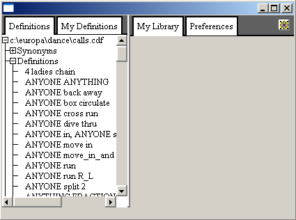

If you click that button, the program will pop
up a menu of additional choices, such as opening an existing dance file or creating
a new one. In the future other functions will be added to this menu.
If you click that button, the program will pop
up a menu of additional choices, such as opening an existing dance file or creating
a new one. In the future other functions will be added to this menu.
Sets in Motion runs under the Windows operating system. It reads and writes several kinds of files, but is primarily limited to manipulating .CDF (Call Definitions) and .DNC (Dance) files. These files are text files that you could view in Notepad if you were so inclined, so that if they become corrupted it is possible to manually repair damage to them. The information is coded, however, in such a way that this wouldn't be a lot of fun. A .CDF file contains definitions of calls, word synonyms, formations and other phrases that are used to interpret and implement calls. Sets in Motion itself has almost no complete call defined entirely in program code. Most calls are defined in terms of other calls or basic functions called primitives that the program does directly understand.
You don't need to know anything about how definitions are written to get started using Sets in Motion. If you are interested in the definitions, look in the Call Writer's Guide.
You will most likely be using DNC or Dance files. These usually consist exclusively of sequences, although they can be expanded to include definition information when necessary (see under Exporting Dance Files). Sequences in a dance file can all be the same level or can be assigned different levels depending on your preference. Most of the information in a sequence is the list of calls. Sets in Motion records a creation date for each sequence and tracks when you made the last change to a sequence. It also allows you to include notes and comments that will be kept with the sequence and shown or printed whenever you look at the sequence again.
While you can select individual files from your disk or create new ones, the program is set up to recognize three special files: default Definitions, My Definitions and My Library. These will automatically be loaded whenever you start Sets in Motion. My Definitions and My Library are both stored in a folder under your personal Documents and Settings area, along with your preferences. The default Definitions are fetched from where you ran the program and are shared by all users that use the same installation of the program.
While there is nothing to prevent you from changing definitions in the default file, those changes will be overwritten the next time you update the program, so use your judgement before doing so. It is generally better, if you want to replace the default definition of a call, to simply write your replacement in My Definitions. Any call defined in My Definitions will take precedence over calls in the default Definitions even if they use the same words in the call. Moreover, this replcacement happens even when the call is referred to from within another definition, even one in the default Definitions. That way, if you decide that you don't want to use the default Definition for a call in some future release, you can easily keep the one in My Definitions as long as you want.
My Library is a dance file that is intended to hold all of your material, if you so wish. Currently, Sets in Motion gives you the ability to browse through the list of sequences, but in the future you will have more capabilities to search and organize your sequences.
Once you have a definition or sequence loaded into an edit window, you may edit the entries more or less in any order you like. You can use the Tab key to move around from field to field or you may click in an editable field with the mouse.
You can generally cut/copy and paste text between this program and other Windows applications just as you would with any other. Text fields can be selected using your mouse and keyboard as you might expect.
Sets in Motion also supports full Undo for edit operations. From any edit field you can type ctrl-Z to undo the last change or ctrl-Y to redo a change you just undid. All changes from the moment you started the program are retained, even after you have saved a file. If you undo changes past the last save point, the program will consider your file as different from the on-disk copy and you will be prompted to save if you leave Sets in Motion without saving first. Note that if you make a bunch of changes and then undo them all, the file will revert to 'unchanged' state and you won't be prompted to save it on exit.
Each file has a separate undo history. So, for example, you may undo a change to a sequence in My Library and that will have no effect on edits to a definition you made in My Definitions.
Sets in Motion has a very simple mechanism for performing sequences during a dance. You will need separate software to run your music and time the tip. This program will only give you a window showing the current sequence and includes the ability to read the sequence or move to the next sequence or re-start the current one, amongst a few other functions. In the future you will have more flexibility in managing a performance and analyzing the results.
Currently, you start a performance by selecting one or more sequences in a Dance file (including My Library, of course) and then click on the right mouse button to bring up the context menu in the Dance Editor and select the option to Perform the select sequences.
When you launch Sets in Motion the program brings up an initial screen that looks something like the illustration on the right. A vertical line separates the window into two parts. The left-hand pane will contain the contents of definitions files, as well as the area where you can read and edit sequences. The right-hand pane will contain lists of sequences as well as the animation and drill-down analysis screens for an individual call plus the preferences you assign that are global to the whole program.
The program uses a tabbed interface to allow you to conveniently navigate among the various sub-windows of the program. Across the top of the main program window you will see tabs with labels like "Definitions" or "My Library". You can bring these sub-windows to the forreground by simply clicking on those tabs with your mouse.
You can adjust the spacing between the left and right panes by simply dragging the separator bar to where you want it. Do this by moving the mouse cursor over the separator bar. You will see the mouse cursor change shape to a double-headed horizontal arrow. That indicates that you are over the separator bar. When you see the arrow-headed cursor press and hold down the left mouse button and then move the mouse. You will see the separator bar move with the mouse until you let up the mouse button.
Until you move the separator bar, you will notice that it will automatically change position as you resize the whole program window. The program is set up to put the bar one third of the way from the left side of the program window. Once you move the separator bar yourself, however, it will stay at the same distance from the left edge of the window where you last set it.
In the upper right corner of the main window you will see a single button.
This is the "More" button.
If you click that button, the program will pop
up a menu of additional choices, such as opening an existing dance file or creating
a new one. In the future other functions will be added to this menu.
Normally the tabs at the tops of windows will be colored white. If however, the tab corresponds to some file it will change to tan to indicate that the file needs to be saved (usually because you have changed or added some data in that file). If you try to close the program when there are unsaved files, you will be prompted to save or discard the changes.
Across the very bottom of the screen is a status area where messages may be displayed to let you know something about what just happened or why something you tried to do didn't work.
When you have a dance file loaded in the right pane of the main window, if you click on any sequence, that will open a sequence editor window in the left pane. If you then click on any of the calls in the sequence (including the 'home' marker at the top of each sequence) this will bring up the animator window in the right-hand pane, showing the dancers as they would be after completing the call you just clicked on.
You can press the Play button on the animation window to then start animating the remainder of the sequence. For more details on using the animator window see Animations.
To the left of each call in a sequence you will see a small button with a question mark on it. This is a 'drill-down' button. If you click this button it will bring up a Call Analysis window in the right-hand pane of the main program window. This view will break the call down into its individual parts, showing you before and after diagrams of each stage of the execution. You will see further drill-down buttons and they will take you further into the details of the call.
The Call Analysis window behaves much like a browser. There are forward and back buttons at the top of the window to let you navigate back to the previous screen you were in before you pressed the last drill-down button, or forward again as you like.
For more details on how to interpret the contents of the Call Analysis window see Call Analysis.
Pressing or clicking the right mouse button will bring up a context menu over some items in some windows. These special menus offer you options specific to the item your mouse cursor is over. Experiment to see what options you have. Opening one of the menus and clicking outside the menu will dismiss it without making any changes, so it is pretty safe to poke around.